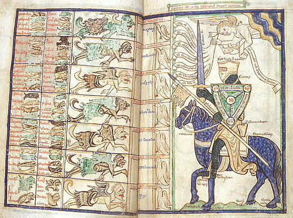
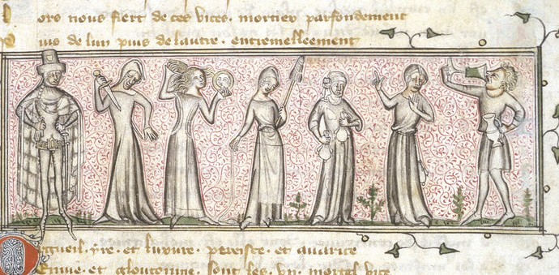
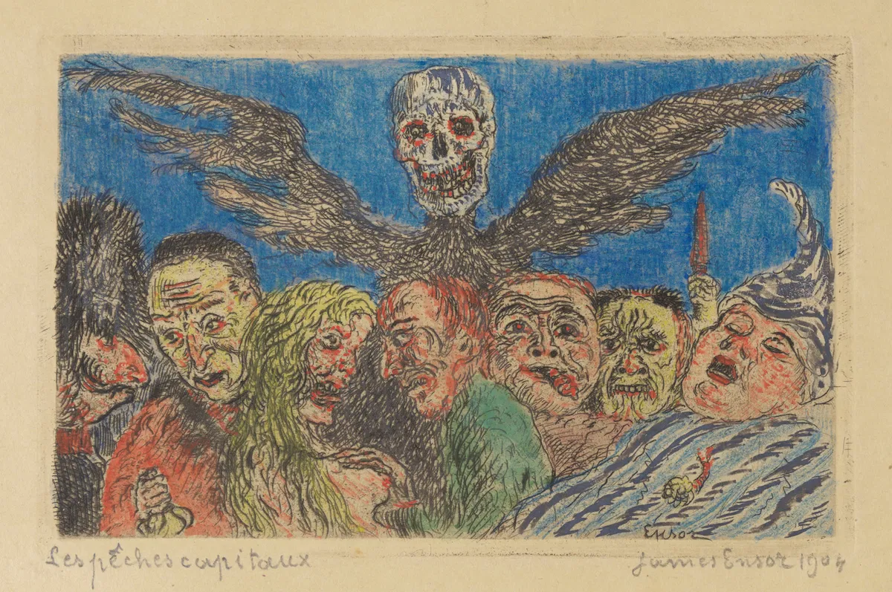

<!doctype html>
<html lang="en">
<head>
  <meta charset="utf-8" />
  <meta name="viewport" content="width=device-width, initial-scale=1" />
  <title>Seven Deadly Sins Survey</title>

  <!-- jsPsych CSS -->
  <link rel="stylesheet" href="https://unpkg.com/jspsych@7.3.4/css/jspsych.css" />

  <!-- jsPsych core -->
  <script src="https://unpkg.com/jspsych@7.3.4"></script>

  <!-- Plugins -->
  <script src="https://unpkg.com/@jspsych/plugin-html-button-response@1.1.3"></script>
  <script src="https://unpkg.com/@jspsych/plugin-html-keyboard-response@1.1.3"></script>
  <script src="https://unpkg.com/@jspsych/plugin-survey-multi-select@1.1.3"></script>
  <script src="https://unpkg.com/@jspsych/plugin-survey-text@1.1.3"></script>

  <!-- Chart.js -->
  <script src="https://cdn.jsdelivr.net/npm/chart.js@4.4.1/dist/chart.umd.min.js"></script>

  <style>
    body { font-family: system-ui, -apple-system, Segoe UI, Roboto, sans-serif; }
    .wrap { max-width: 820px; margin: 24px auto; padding: 0 8px; }
    .small { opacity: .75; font-size: 13px; line-height: 1.35; }
    .heroimg { width: 100%; max-width: 760px; height: auto; border-radius: 12px; display: block; margin: 14px auto; }
    .top { display:flex; flex-direction:column; align-items:center; gap:10px; }
    canvas { max-width:520px; width:100%; height:auto; }
    .row { margin: 12px 0; }
    .lab { display:flex; justify-content:space-between; gap:10px; font-size:14px; font-weight:600; }
    input[type="range"] { width:100%; }
    button { padding:10px 14px; border-radius:10px; border:1px solid rgba(0,0,0,0.25); cursor:pointer; font-weight:700; }
  </style>
</head>

<body>
  <div id="jspsych-target"></div>

  <script>
    // =========================
    // CONFIG
    // =========================
    const WEB_APP_URL = "https://script.google.com/macros/s/AKfycbzlq133iOhEJuB3zEyPgX73q2MhGAoAJD9XEOhYQQbmrcSVuQZk9E7-hfwP34cbadJIiQ/exec";
    const SINS = ["Pride","Greed","Lust","Envy","Gluttony","Wrath","Sloth"];

    function getParticipantId() {
      let pid = localStorage.getItem("participant_id");
      if (!pid) {
        pid = (crypto.randomUUID ? crypto.randomUUID() : String(Date.now()) + "_" + Math.random().toString(16).slice(2));
        localStorage.setItem("participant_id", pid);
      }
      return pid;
    }

    async function postToSheets(obj) {
      obj.participant_id = getParticipantId();
      obj.timestamp = new Date().toISOString();
      obj.user_agent = navigator.userAgent;

      // Use text/plain to avoid CORS preflight hassles
      return fetch(WEB_APP_URL, {
        method: "POST",
        headers: { "Content-Type": "text/plain;charset=utf-8" },
        body: JSON.stringify(obj)
      });
    }

    // =========================
    // RADAR
    // =========================
    const sins = [
      { id: "pride", label: "Pride" },
      { id: "greed", label: "Greed" },
      { id: "lust", label: "Lust" },
      { id: "envy", label: "Envy" },
      { id: "gluttony", label: "Gluttony" },
      { id: "wrath", label: "Wrath" },
      { id: "sloth", label: "Sloth" },
    ];

    function buildRadarHTML(initial = 4) {
      const sliders = sins.map(s => `
        <div class="row">
          <div class="lab">
            <label for="${s.id}">${s.label}</label>
            <span id="${s.id}_val">${initial}</span>
          </div>
          <input id="${s.id}" type="range" min="1" max="7" step="1" value="${initial}">
        </div>
      `).join("");

      return `
        <div class="wrap">

          <h2 style="margin-top:0;">SINSTATS</h2>

          
          <div class="small">Summa de vitiis or "Treatise on the Vices" by the 13th-century Dominican friar William Peraldus</div>

          <div style="height: 14px;"></div>

          <div style="white-space: pre-wrap;">
First things first, rate ur stats on each sin. The truth is that i wanted this radial in real time which is why the task is on jsPsych and not qualtrics. 1 is low, 7 is high.
          </div>

          <div style="height: 10px;"></div>

          <div class="top">
            <canvas id="radarChart" width="400" height="400"></canvas>
          </div>

          ${sliders}

          <div style="margin-top: 16px; display:flex; justify-content:flex-end; gap:10px; align-items:center;">
            <span id="status" class="small"></span>
            <button id="submitBtn" type="button">Continue</button>
          </div>
        </div>
      `;
    }

    // =========================
    // INIT jsPsych
    // =========================
    const jsPsych = initJsPsych({
      display_element: "jspsych-target"
      // No global on_finish needed now; we post on each page.
    });

    // =========================
    // PAGES
    // =========================

    const page1_intro = {
      type: jsPsychHtmlButtonResponse,
      stimulus: `
        <div class="wrap">
          
          <div class="small">Personifications of the Seven Deadly Sins in a fourteenth-century manuscript (British Library, Yates Thompson MS. 21, f. 165</div>

          <div style="height: 14px;"></div>

          <div style="white-space: pre-wrap;">
Have been tasked yet again as the hermeneutic theorypilled factcel social scientist within the household with creating a survey to make you mingle and also collect information on you. Last time a few of you expressed discontent with my bday survey that our great failing american institute Harvard University may have access to your data and strange body facts. Your feedback has been taken into consideration. Now the only entity that will have your data other than the windsor household is sundar pichai the CEO of google via the extremely secure google sheets link that is attached to this survey. 

This is my first time making a jsPsych survey and i will admit that i am very, very, very afraid that it will fail :( this survey will have 3 parts. Please fill out as much or as little as you deem appropriate. The main section of this survey will be envy. We are about to get sooooo super covetous in da house tonight 
          </div>
        </div>
      `,
      choices: ["Continue"]
    };

    // Radar page with Peraldus on same page
    const page2_radar_with_peraldus = {
      type: jsPsychHtmlKeyboardResponse,
      stimulus: buildRadarHTML(4),
      choices: "NO_KEYS",
      data: { trial_tag: "sins_radar" },
      on_load: () => {
        const statusEl = document.getElementById("status");
        const getVals = () => sins.map(s => Number(document.getElementById(s.id).value));

        const ctx = document.getElementById("radarChart");
        const chart = new Chart(ctx, {
          type: "radar",
          data: {
            labels: sins.map(s => s.label),
            datasets: [{ label: "You", data: getVals(), fill: true }]
          },
          options: {
            responsive: true,
            animation: false,
            scales: { r: { min: 1, max: 7, ticks: { stepSize: 1 } } }
          }
        });

        function update() {
          sins.forEach(s => {
            document.getElementById(s.id + "_val").textContent = document.getElementById(s.id).value;
          });
          chart.data.datasets[0].data = getVals();
          chart.update();
        }

        sins.forEach(s => document.getElementById(s.id).addEventListener("input", update));
        update();

        // SAVE HERE (robust)
        document.getElementById("submitBtn").addEventListener("click", async () => {
          statusEl.textContent = "Saving…";

          const payload = {};
          sins.forEach(s => payload[s.id] = Number(document.getElementById(s.id).value));

          // Save in jsPsych dataset
          jsPsych.data.write({ trial_tag: "sins_radar", ...payload });

          // Post to Google Sheets immediately
          try {
            await postToSheets({ stage: "radar", ...payload });
            statusEl.textContent = "Saved.";
          } catch (e) {
            console.error("Radar save failed", e);
            statusEl.textContent = "Save failed (check console).";
          }

          jsPsych.finishTrial(payload);
        });
      }
    };

   const SLIDO_URL = "https://app.sli.do/event/mVxRttUV7vKSqaJcFkjaNV/polls";
// If this fails, try without /polls

const page3_slido_embed = {
  type: jsPsychHtmlKeyboardResponse,
  choices: "NO_KEYS",
  stimulus: `
    <div class="wrap">
      <h2 style="margin-top:0;">Live envy poll</h2>

      <div class="small" style="margin-bottom:10px;">
        If the poll doesn’t load, open it here:
        <a href="${SLIDO_URL}" target="_blank" rel="noopener noreferrer">
          Open Slido in a new tab
        </a>
      </div>

      <iframe
        src="${SLIDO_URL}"
        style="width:100%; min-height:720px; border:0; border-radius:12px;"
        allow="clipboard-write; fullscreen"
        loading="lazy"
      ></iframe>

      <div style="margin-top:16px; display:flex; justify-content:flex-end;">
        <button id="continueBtn" type="button">Continue</button>
      </div>
    </div>
  `,
  on_load: () => {
    document
      .getElementById("continueBtn")
      .addEventListener("click", () => {
        jsPsych.finishTrial({
          trial_tag: "slido_embed",
          slido_url: SLIDO_URL
        });
      });
  }
};


    const page4_sun_moon_rising = {
      type: jsPsychSurveyMultiSelect,
      preamble: `
        <div class="wrap">
          <div style="height:8px;"></div>
          
          <div class="small">
            James Ensor, <em>The Deadly Sins Dominated by Death</em>, hand-coloured etching on Japanese paper, frontispiece to <em>The Deadly Sins</em>, ca. 1904
          </div>

          <div style="height: 10px;"></div>

The question that i believe sparked the party theme. Slightly different than just raw stats - we want to know what your sun moon and rising are for the seven deadly sins. Those of us on hinge know that sun moon and rising are the three essential star signs you must know in order to bag a quirked up shawty. Like a troll on the bridge, or a sphinx at the gate, the answer to this riddle may grant you passage forward. Feel free to double up, even triple up, on sins! these should affect each other and may be different based on configuration. e.g., a pride sun, greed moon, lust rising might be very different than a lust sun, pride moon, greed rising. If you're not sure just imagine a beautiful astrology lover in your mind and use your intuition.  <p>

<b>SUN -</b> Your core, your impulse, the thing that sheds light on everything else. If everything else fell away, this is what would still be there. <br>
<b>MOON - </b>Your emotional self. This is how your sin shows up when you are tired, lonely, being emo. <br>
<b>RISING -</b> How people see and experience you, whether you mean it or not. It is the vibe you give off, the pattern people pick up on. <br>
        </div>
      `,
      questions: [
        { prompt: "SUN", name: "sun", options: SINS, required: false },
        { prompt: "MOON", name: "moon", options: SINS, required: false },
        { prompt: "RISING", name: "rising", options: SINS, required: false }
      ],
      button_label: "Continue",
      data: { trial_tag: "sun_moon_rising" },
      on_finish: async (data) => {
        try {
          await postToSheets({
            stage: "sun_moon_rising",
            sun: (data.response.sun || []).join("; "),
            moon: (data.response.moon || []).join("; "),
            rising: (data.response.rising || []).join("; ")
          });
        } catch (e) {
          console.error("SMR save failed", e);
        }
      }
    };

    const page5_demogs = {
      type: jsPsychSurveyText,
      preamble: `
        <div class="wrap">
Who are you? Feel free to put your name for game + our records.
        </div>
      `,
      questions: [
        { prompt: "", name: "who", required: false, rows: 5, columns: 70 }
      ],
      button_label: "Finish",
      data: { trial_tag: "who_are_you" },
      on_finish: async (data) => {
        try {
          await postToSheets({
            stage: "who",
            who: data.response.who || ""
          });
        } catch (e) {
          console.error("Who save failed", e);
        }
      }
    };

    const done = {
      type: jsPsychHtmlButtonResponse,
      stimulus: `
        <div class="wrap">
          <h2 style="margin-top:0;">Done</h2>
          <p>You can close this tab.</p>
        </div>
      `,
      choices: ["Close"]
    };

    jsPsych.run([
  page1_intro,
  page2_radar_with_peraldus,
  page3_slido_embed,
  page4_sun_moon_rising,
  page5_demogs,
  done
]);
  </script>
</body>
</html>
